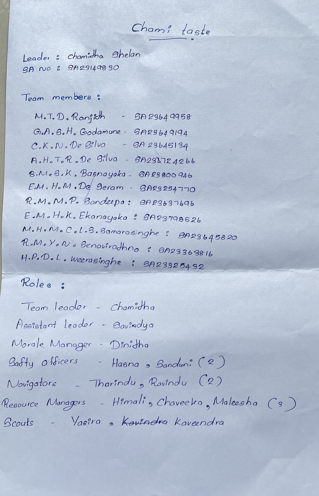
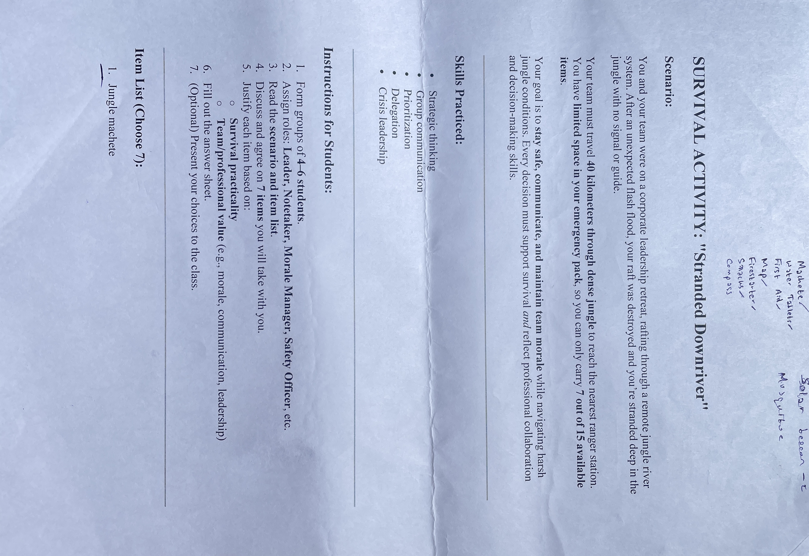
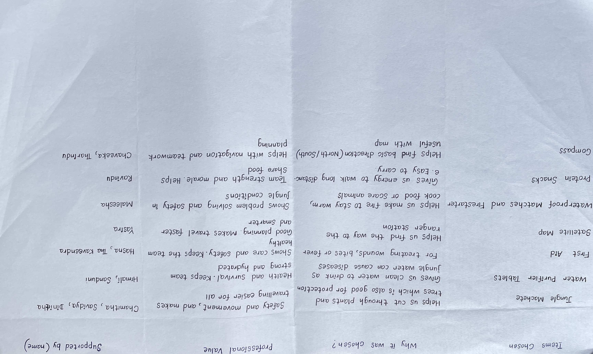
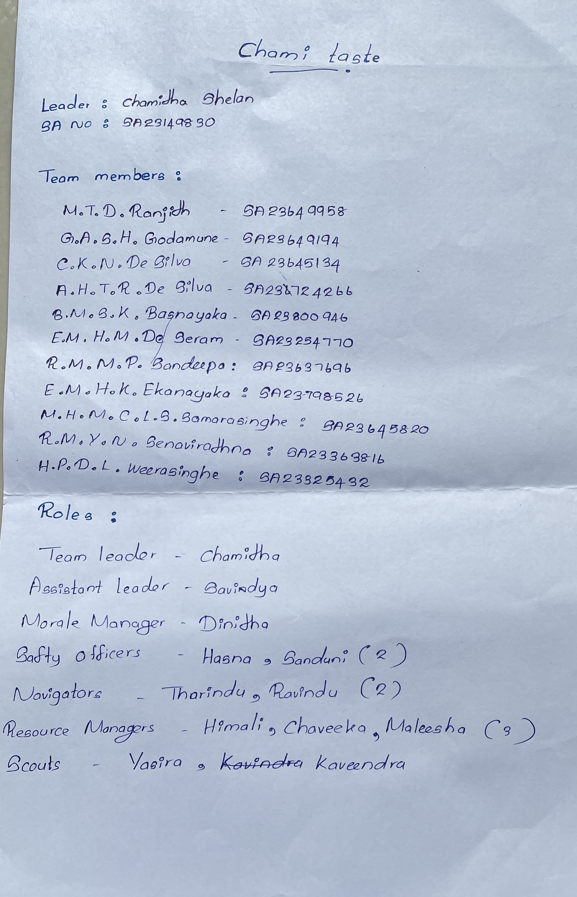
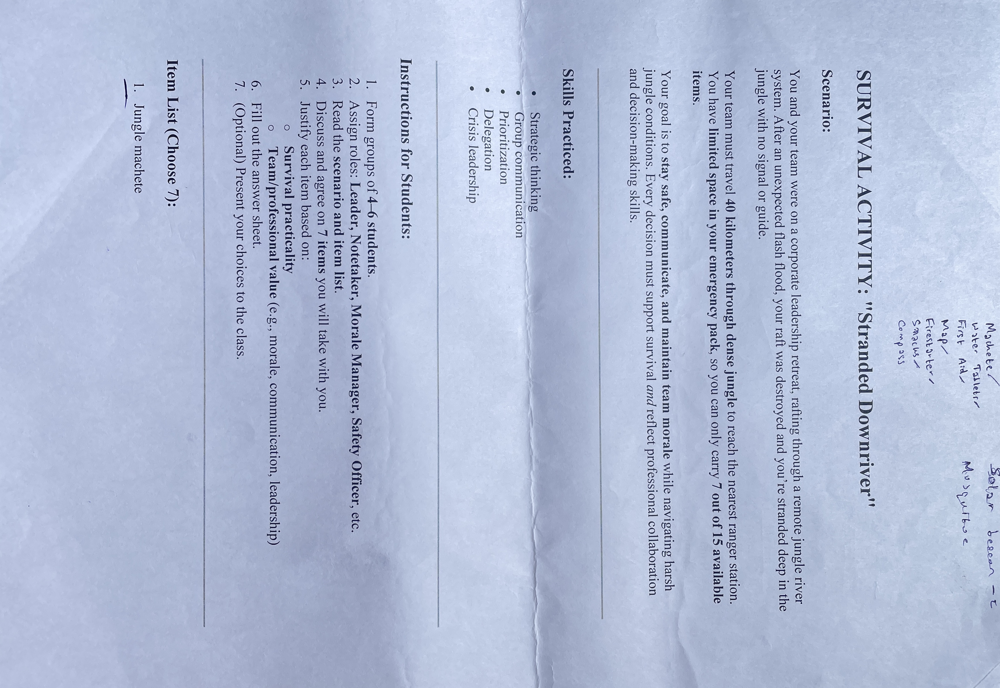
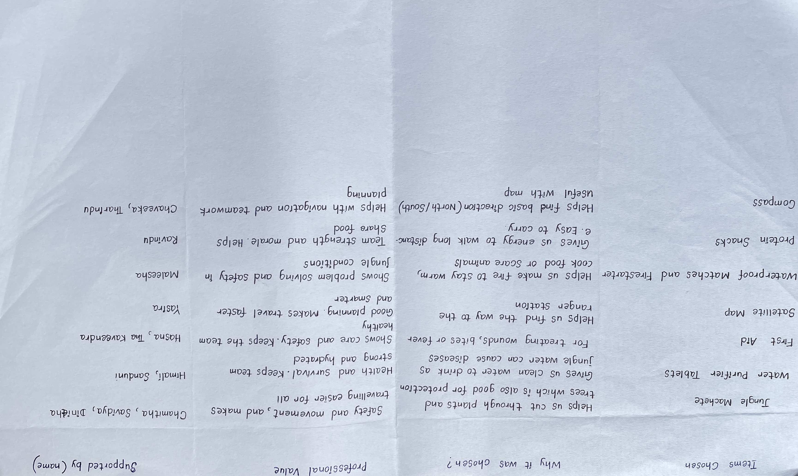

Week 5 — Food Festival Discussion / Surviving Skills
Summary
In this lecture we planned the Food Festival assignment and did a group “survival” activity to test teamwork. Madam explained how to form groups, choose foods, name the group, follow rules, senior batches tips about budgeting, hygiene, and promotion, and how work together for a successful festival. Then each group completed the in-class survival tasks our Activity “Stranded Downriver”: we read the scenario, assigned roles (Leader, Notetaker, Morale Manager, Safety Officer), discussed 15 possible items, and chose seven items we thought best for safety, communication, and morale. The activity helped us connect event planning skills (organization, division of tasks) with practical group decision-making under pressure.
Key Learnings
- Food-festival planning needs clear roles, early decisions on menu and supplies, and simple rules to avoid confusion.
- Effective teamwork involves dividing tasks, communicating regularly, and monitoring progress frequently.
- The survival exercise built strategic thinking, prioritization, delegation, crisis leadership, and articulation of decisions.
- Presenting and justifying choices improves persuasive communication and professional teamwork skills.
My Experience
I enjoyed this lecture because it mixed a real project (food festival) with an active teamwork test. Working in my group, we quickly assigned roles and practiced making decisions together. The survival activity was fun and challenging. It made me think about what is most important in an emergency and how to explain my choices clearly. After the session I felt more confident about taking responsibility in group tasks, planning small events, and speaking up when we present our ideas. I also noted useful tips that madam shared from senior batch experiences that I will use for the food festival (focus on hygiene, clear pricing, and simple marketing).
Gallery
 




